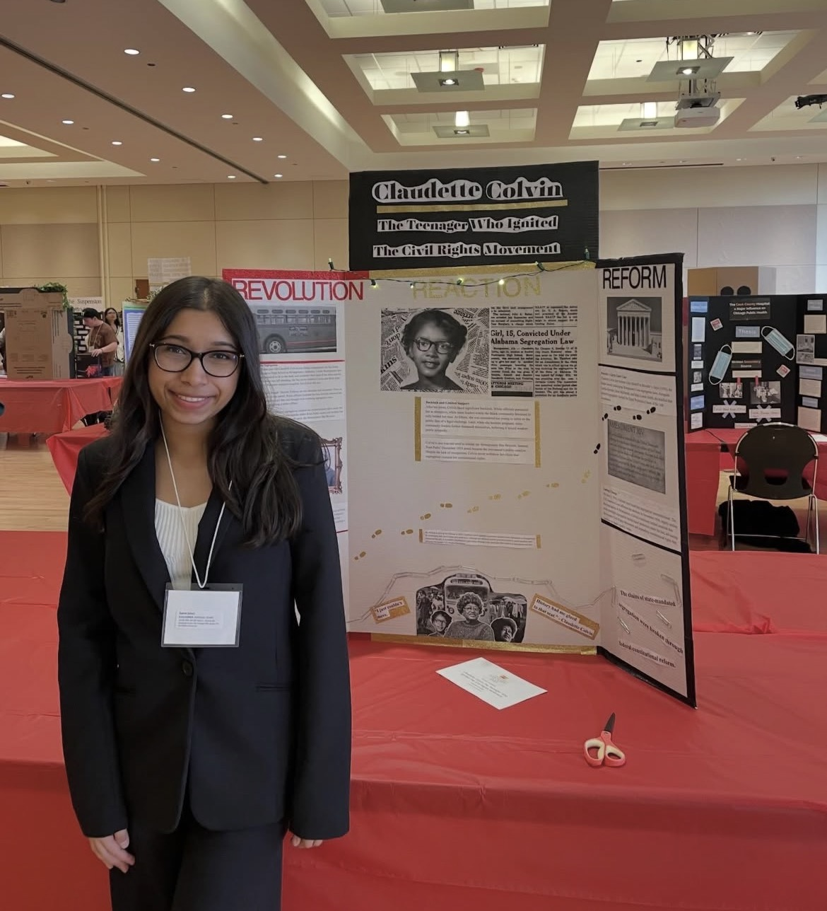
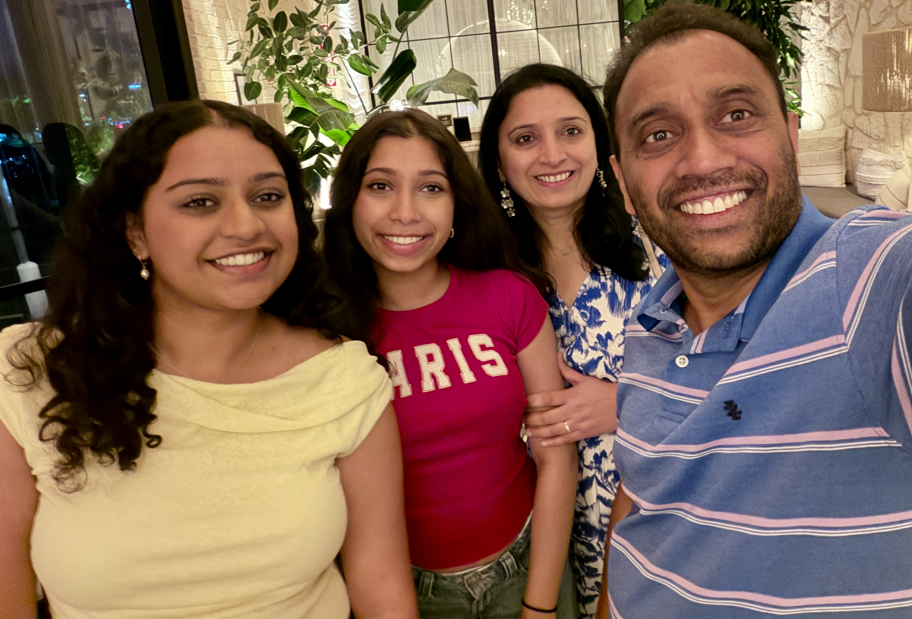
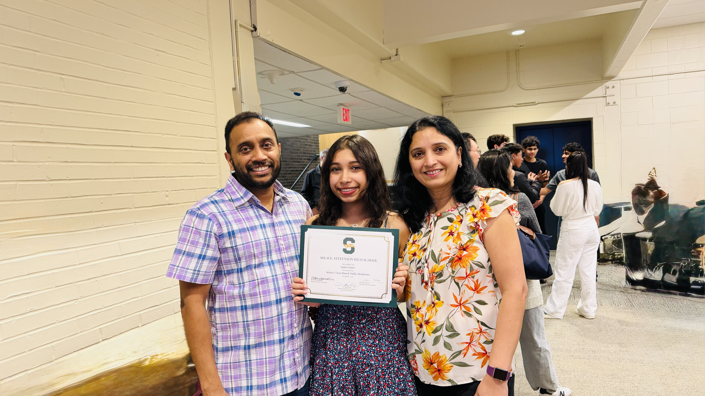

I am passionate about using my voice to advocate for others and create a tangible change within my community. Through leadership, I strive to build spaces where individuals feel represented and empowered.
Traveling has shaped who I am by exposing me to diverse perspectives, traditions, and cultures around the world. I have visited over half of the United States and four continents!

The people around me have inspired me to become the person I am today. Their support, resilience, and encouragement continuously motivate me to approach life with gratitude and authenticity.

I am driven by curiosity and a desire to continuously learn beyond the classroom. I enjoy challenging myself through rigorous coursework, research, and interdisciplinary thinking.